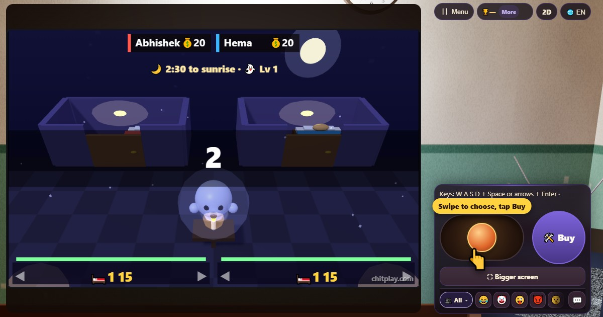

Ghost Hostel (Ghost Hostel)
- 👥 1–4 giocatori
- Giochi arcade (sulla TV, in 3D)
- 🆓
Guida in italiano
Una notte in un ostello infestato. Dormi per le monete, rinforza la porta e resisti fino all'alba.
English name: Ghost Hostel

Come si gioca
- Il tuo letto guadagna monete ogni secondo. Un letto migliore ne guadagna di più.
- Usa le frecce o i pulsanti per scegliere Letto, Porta, Ventilatore o Ripara, e premi Compra.
- Porta: più resistenza, e viene riparata fino alla nuova resistenza. Ripara: aggiusta parte della porta, poi servono alcuni secondi prima della riparazione successiva.
- I ventilatori soffiano sul fantasma finché è alla tua porta. Feriscilo abbastanza e torna fluttuando nel suo angolo a riprendersi.
- Il fantasma diventa più forte ogni trenta secondi, e più arrabbiato negli ultimi quaranta. Se la porta cede, vieni preso e sei fuori.
Punteggio
Ottieni ogni moneta guadagnata dal letto, più 100 per aver resistito fino all'alba e altri 150 se il fantasma viene cacciato per sempre.
Chi vince
Vince chi è ancora nella sua stanza all'alba. Caccia via del tutto il fantasma e la notte finisce prima. Se prende tutti, vince il fantasma.
Domande frequenti
Quanto dura una partita?
Una notte: due minuti e mezzo.
Posso giocare con gli amici?
Sì, fino a quattro, ognuno nella sua stanza. Le stanze vuote le prendono i giocatori del computer.
Modi di giocare
- Come ospite: Niente registrazione né accesso. Scegli un nome e gioca subito.
- Contro il computer: Se non c'è nessuno, i giocatori del computer occupano i posti liberi. Facile, normale o difficile.
- Online: Siediti a un tavolo pubblico con giocatori di tutto il mondo.
- Con gli amici vicini: Crea la partita su un telefono e condividi il codice o il QR. Gli amici entrano dal loro telefono.
- Su un solo telefono: Passatevi il telefono a turno: basta un dispositivo per tutta la famiglia.
Altre lingue
- हिन्दी: घोस्ट हॉस्टल
- Hinglish: Ghost Hostel
- Español: Ghost Hostel
- Português: Ghost Hostel
- Français: Ghost Hostel
- Deutsch: Ghost Hostel
- Bahasa Indonesia: Ghost Hostel
- Türkçe: Ghost Hostel
- 日本語: おばけ寮
- 한국어: 유령 기숙사
- 中文: 鬼宿舍
- Русский: Общежитие с привидениями
- اردو: بھوتوں والا ہاسٹل
- नेपाली: भूतको होस्टल
- বাংলা: ভূতের হোস্টেল
- English: Ghost Hostel · Regole complete (inglese)
Tutti i giochi


In ChitPlay non ci sono soldi veri, scommesse o premi. I punti non hanno valore.